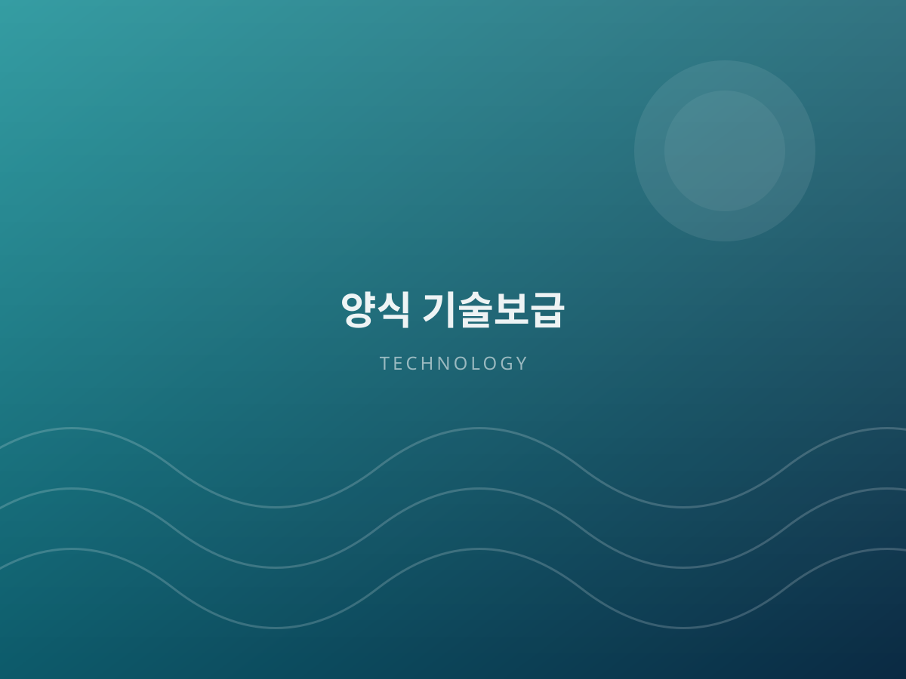
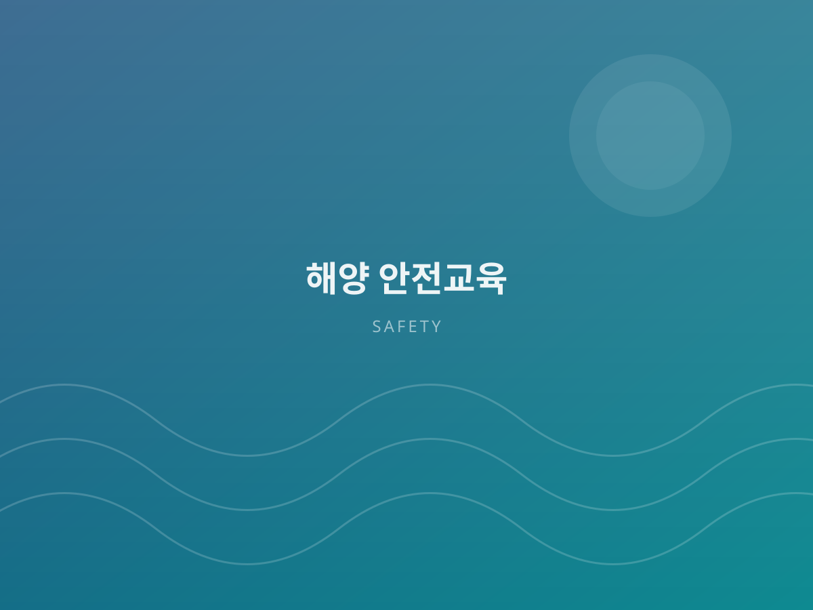

사업 안내Our Programs
기술보급 · 해외시장 개척 · 기술향상 교육 · 해양 안전교육, 네 가지 핵심 사업을 수행합니다. Technology transfer, overseas markets, skill training and marine safety — our four core programs.

수산산업 기술보급Technology Diffusion
연구 성과와 현장 사이의 거리를 좁힙니다. 양식장의 규모와 어종, 환경에 맞춰 적용 가능한 기술을 선별하고, 도입부터 정착까지 함께합니다. We close the distance between research and the field — selecting technology that fits each farm's scale, species and environment, and staying through adoption.
현장 진단 및 기술 컨설팅Field diagnosis & consulting
사육 환경, 수질, 사료 관리 등 전반을 진단하고 개선안을 제시합니다.Assessment of rearing conditions, water quality and feed management with improvement plans.
신기술·기자재 보급New technology & equipment
검증된 양식 기자재와 시스템을 소개하고 도입을 지원합니다.Introducing and supporting adoption of verified aquaculture systems.
사후 관리 및 성과 점검Follow-up & review
도입 이후 정기 점검으로 실제 성과가 나올 때까지 관리합니다.Regular reviews after adoption until measurable results appear.
해외시장 개척Overseas Market Development
국내 시장을 넘어 세계로 향하는 회원사를 지원합니다. 바이어 발굴, 수출 절차 안내, 국제 박람회 참가까지 실무 중심으로 돕습니다. We help members reach beyond the domestic market — buyer discovery, export procedures and participation in international trade fairs.
바이어 매칭Buyer matching
해외 수입사·유통사와의 상담 자리를 마련합니다.Arranging meetings with overseas importers and distributors.
수출 실무 지원Export support
인증, 통관, 물류 등 수출 준비 과정을 안내합니다.Guidance on certification, customs and logistics.
국제 박람회 참가Trade fairs
공동관 운영으로 참가 부담을 낮춥니다.Joint pavilions that lower the cost of entry.
기술 수출·협력Technology export
양식 기술의 해외 이전과 국제 협력을 추진합니다.Transferring aquaculture technology abroad through partnerships.


수산산업 기술향상 교육Skill Enhancement Training
처음 시작하는 분부터 오래 종사하신 분까지, 수준에 맞춘 과정을 운영합니다. 이론과 현장 실습을 병행해 배운 즉시 적용할 수 있도록 구성했습니다. Courses for every level, from newcomers to veterans — combining theory with hands-on practice so learning applies immediately.
| 기초 과정Basic | 양식 개론, 어종별 사육 기초, 수질 관리 입문Introduction to aquaculture, species basics, water quality |
|---|---|
| 심화 과정Advanced | 질병 관리, 사료 효율, 스마트 양식 시스템 운용Disease management, feed efficiency, smart aquaculture systems |
| 실습 과정Practical | 현장 양식장 실습, 기자재 운용, 사례 분석On-site practice, equipment operation, case studies |
| 단체 교육Group | 어촌계·기업·기관 대상 맞춤형 출강 교육Customized on-site training for co-ops, companies and agencies |
해양 안전교육Marine Safety Education
바다에서의 작업은 한순간의 방심이 큰 사고로 이어집니다. 협회는 실제 사고 사례를 기반으로 한 실전형 안전교육을 제공합니다. At sea, one moment of inattention can become a serious accident. Our safety training is built on real incident cases.
해상 작업 안전Offshore work safety
작업 절차, 장비 점검, 위험 요인 관리Procedures, equipment checks, hazard control
응급 대응 훈련Emergency response
구명 장비 사용, 응급처치, 구조 요청 절차Life-saving equipment, first aid, rescue protocols
안전 관리 체계Safety systems
사업장 안전 규정 수립과 점검 체크리스트Site safety rules and inspection checklists
사례 중심 교육Case-based learning
실제 사고 분석을 통한 재발 방지 교육Analysis of real incidents to prevent recurrence

사업 진행 절차How We Work
문의부터 결과 보고까지, 투명하고 예측 가능한 절차로 진행합니다.From inquiry to final report — a transparent, predictable process.
문의 · 상담Inquiry
전화 또는 온라인 문의로 필요한 사항을 알려주세요.Tell us what you need by phone or online form.
현장 진단Assessment
현장을 방문해 상황을 확인하고 과제를 정리합니다.We visit the site and define the objectives.
계획 · 계약Agreement
일정과 범위를 협의하고 업무 계약을 체결합니다.Scope and schedule are agreed and contracted.
수행 · 보고Delivery
사업을 수행하고 결과를 문서로 보고드립니다.We execute and deliver a documented report.
업무 협약 · 기술 자문 문의Partnership & advisory
기관, 기업, 어촌계 모두 협력 가능합니다. 편하게 연락 주세요.Open to agencies, companies and fishing communities alike.